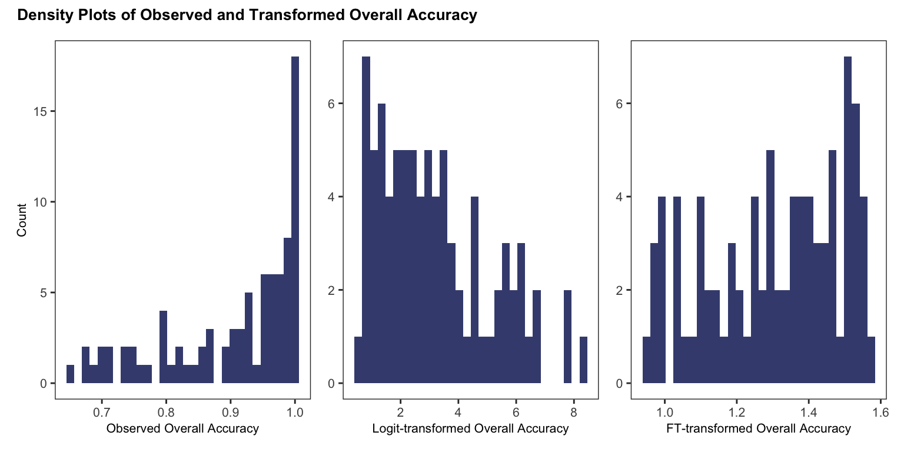
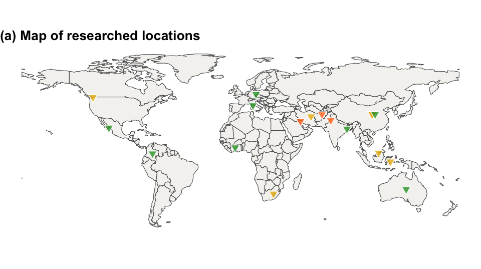
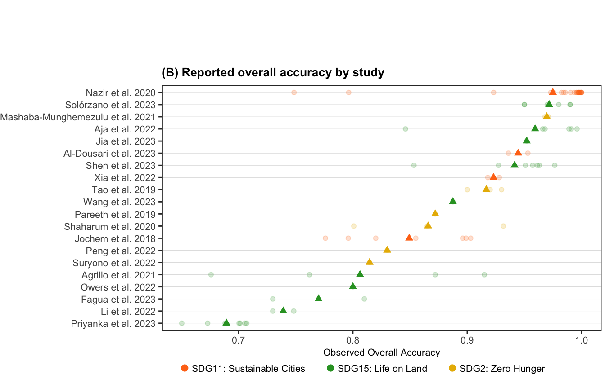
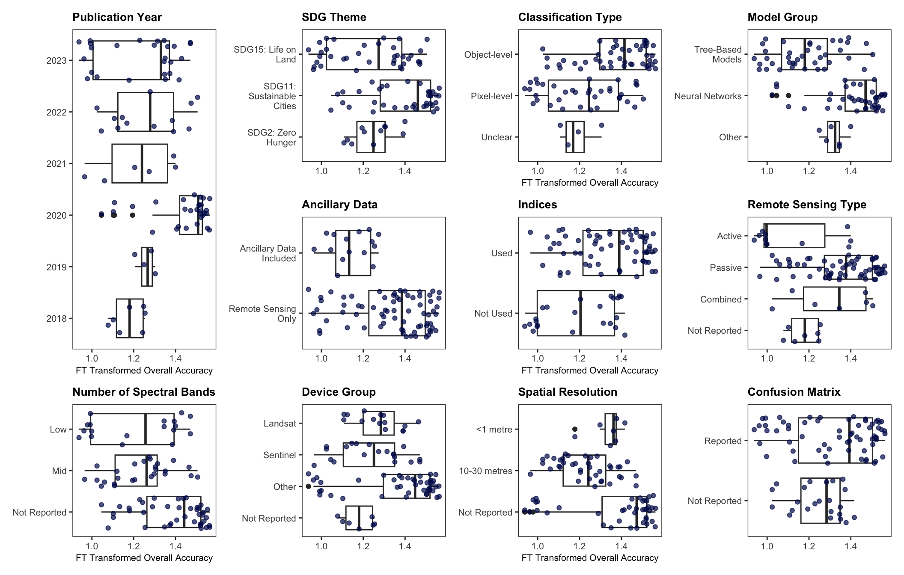
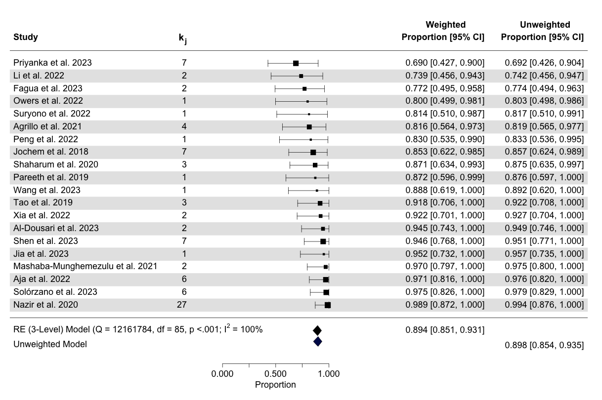
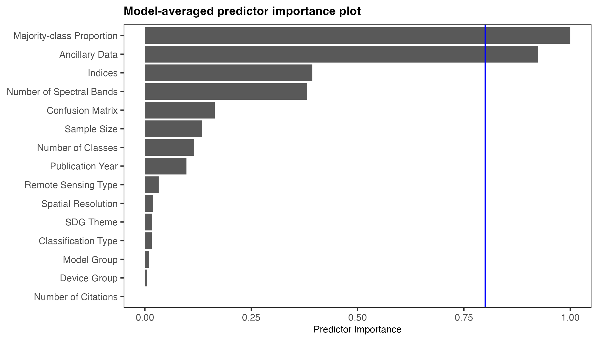
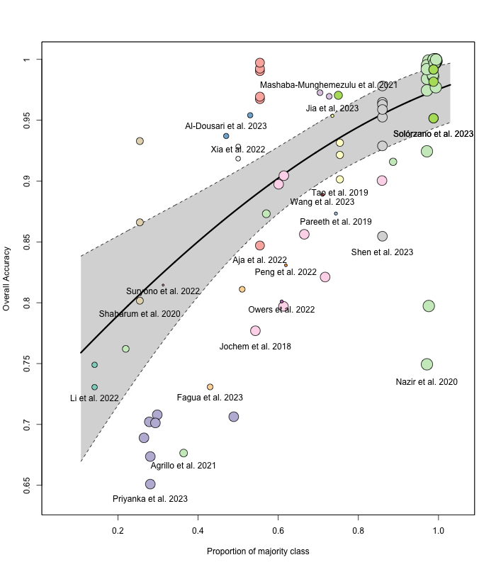
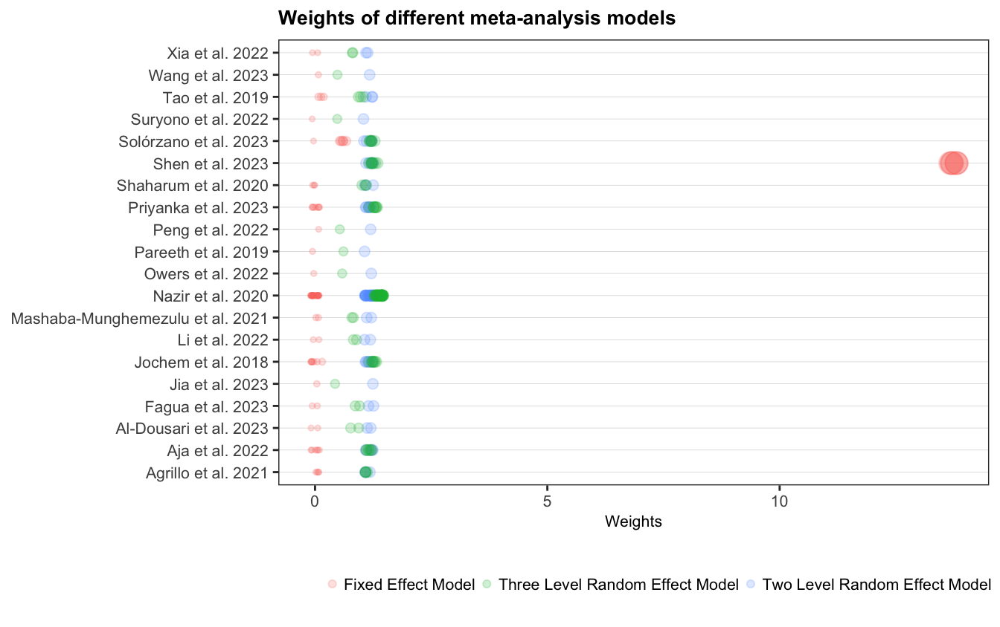
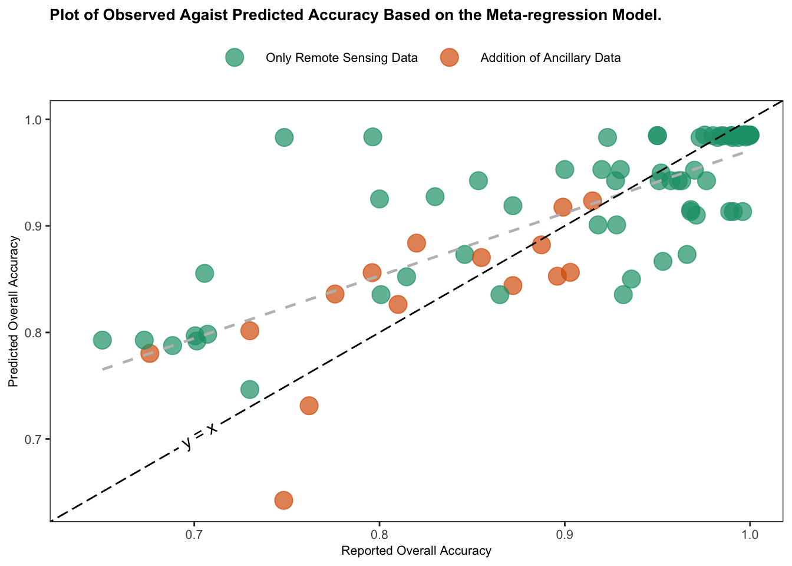

4 Results
Descriptive Statistics
A total of \(n = 20\) studies with \(k = 86\) effect sizes were included in this analysis, with each primary study reported between one and 27 results (\(1 \leq k_j \leq 27\)). The research area of these studies span 18 countries, Figure 4.1 shows a map indicating the location of each effect size. These primary studies were grouped into three different SDG goals: SDG 2 Zero Hunger, SDG 11 Sustainable Cities, and SDG 15 Life on Land.


@#fig-map_range (b) and Table 4.1 (bellow) show, the reported overall accuracies are not centered around 0.5. Therefore, a transformation is required. Figure 4.2 shows the distribution of observed overall accuracy as well as the logit and FT transformation values. FT visually performs better than the Logit transformation. However the Shapiro-Wilk Normality test shows that the distribution of the FT transformed overall accuracy still departed significantly from normality (\(W =\) 0.93, p-value < 0.01). Nevertheless, conducting a meta-analysis remains justified, as these statistical models are generally robust against violations of normality (McCulloch & Neuhaus, 2011).
Table 4.1 summarises the overall accuracy (effect size of interest), study sample size and the collected study features, including the study features such as sample size, overall accuracy, types of machine learning models used and SDG goal targeted. For the meta-analysis the range of the sample size (259 - 75782016) and overall accuracy (0.6504 - 1) are of importance. Most studies used Neural Networks (48%), followed by Tree-Based Models (45%), and a small portion used other types of models (7%). Regarding SDGs, 44% of the studies aimed at SDG 11 (Sustainable Cities), 43% targeted SDG 15 (Life on Land), and 13% focused on SDG 2 (Zero Hunger).
| Feature | Statistic |
|---|---|
| Overall Accuracy | 0.90 (0.65 - 1.00) |
| Study Features | |
| Numeric$^b$ | |
| Sample Size | 6,401,352 (259 - 75,782,016) |
| Number of Citations | 15 (2 - 68) |
| Number of Classes | 4 (2 - 13) |
| Majority-class Proportion | 0.72 (0.14 - 1.00) |
| Categorical$^c$ | |
| Publication Year | |
| 2018 | 7 (8.1%) |
| 2019 | 4 (4.7%) |
| 2020 | 30 (35%) |
| 2021 | 6 (7.0%) |
| 2022 | 13 (15%) |
| 2023 | 26 (30%) |
| SDG Theme | |
| SDG11: Sustainable Cities | 38 (44%) |
| SDG15: Life on Land | 37 (43%) |
| SDG2: Zero Hunger | 11 (13%) |
| Classification Type | |
| Object-level | 46 (53%) |
| Pixel-level | 36 (42%) |
| Unclear | 4 (4.7%) |
| Model Group | |
| Neural Networks | 41 (48%) |
| Other | 6 (7.0%) |
| Tree-Based Models | 39 (45%) |
| Ancillary Data | |
| Remote Sensing Only | 71 (83%) |
| Ancillary Data Included | 15 (17%) |
| Indices | |
| Not Used | 23 (27%) |
| Used | 63 (73%) |
| Remote Sensing Type | |
| Active | 11 (13%) |
| Combined | 7 (8.1%) |
| Not Reported | 7 (8.1%) |
| Passive | 61 (71%) |
| Device Group | |
| Landsat | 15 (17%) |
| Not Reported | 7 (8.1%) |
| Other | 44 (51%) |
| Sentinel | 20 (23%) |
| Number of Spectral Bands | |
| Low | 18 (21%) |
| Mid | 26 (30%) |
| Not Reported | 42 (49%) |
| Spatial Resolution | |
| <1 metre | 7 (8.1%) |
| 10-30 metres | 39 (45%) |
| Not Reported | 40 (47%) |
| Confusion Matrix | |
| Not Reported | 23 (27%) |
| Reported | 63 (73%) |
| a Effect size of interest. $^a$For numeric predictors: mean (min - max) and $^b$ for categorical variables number of effect sizes (%) | |


Meta-analysis
The forest plot below (Figure 4.5) compares the overall accuracy effect size across studies using both weighted and unweighted models, with error bars which correspond to the weighted model — at this scale there is no discernible difference between the error bars of the two models. Each study is given with the number of estimates per study \(k_j\), and study average effect size (\(\kappa_j\)), with 95% confidence intervals (CI), both for the weighted and unweighted model. Of the 20 primary studies included, six reported only one effect. Based on the unweighted model, the average accuracy of machine learning methods applied to remote sensing data is 0.90 (95% CI[0.85; 0.94]). While the three-level meta-analytic model produced an average accuracy of 0.89 (95% CI[0.85; 0.93]). This implies, that on average, the machine learning methods correctly classify around 90% of the time when applied to remote sensing data.

The heterogeneity metrics Cochran’s Q indicate significant heterogeneity of the reported overall acccuracies. The percentage of the variance attribution is \(I^2_{\text{level3}}\) = 63.62% which is the fraction of the variation that can be attributed to between-study, and \(I^2_{\text{level2}}\) = 36.38% which is within-study heterogeneity, with negligible fixed effect variance (variance due to sampling error). The \(I^2\) value of 100% indicates that all the observed variability in effect sizes across studies is due to heterogeneity rather than sampling error, suggesting substantial differences between the studies and a high degree of variation in their results.
Model Selection
Using the multi-model inference function, a total of 31,298 models converged . Figure 4.6, illustrates the predictor importance after evaluating all possible combinations of predictors to identify which combination provides the best fit and which predictors are most influential. Higher importance values indicate more consistent inclusion in high-weight models. The majority class proportion is the most important predictor, followed by the inclusion of ancillary data. Less influential predictors include used of indices, sample size, publication year, and the number of classes in the study. Meanwhile, factors such as classification type, SDG goal, machine learning group, spatial resolution, and citation count have minimal importance in the overall model performance (i.e., were not included in the models top performing models according to AIC).

In the multimodel inference analysis, the five best-performing models were identified based on their AIC scores. The selected top models consistently included key predictors such as the majority-class proportion and the use of ancillary data. Table 4.2 shows the results of the multi-model inference. The significant study features are the majority-class proportion and the inclusion of ancillary data. Interestingly, the use of ancillary data has a negative effect on overall accuracy in the FT transformed scale. Table 4.3 shows these best performing models and the intercept-only model (before adding the predictors), note that the AIC is very similar in among the top five.
| Importance | Feature (Referance Category) | Comparison Category | b | SE | z | p |
|---|---|---|---|---|---|---|
| NA | Intercept | na | 1.29 | 7.85 | 0.16 | 0.869 |
| 1.00 | Majority-class Proportion | na | 0.47 | 0.08 | 6.15 | 0.000 |
| 0.92 | Ancillary Data (Remote Sensing Only) | Ancillary Data Included | -0.12 | 0.05 | 2.33 | 0.020 |
| 0.39 | Indices (Not Used) | Used | 0.03 | 0.04 | 0.67 | 0.500 |
| 0.38 | Number of Spectral Bands (Low) | Mid | 0.05 | 0.06 | 0.72 | 0.471 |
| NA | na | Not Reported | 0.02 | 0.04 | 0.55 | 0.581 |
| 0.16 | Confusion Matrix (Not reported) | Reported | 0.01 | 0.02 | 0.29 | 0.776 |
| 0.13 | Sample Size | na | 0.00 | 0.00 | 0.10 | 0.922 |
| 0.11 | Number of Classes | na | 0.00 | 0.00 | 0.19 | 0.846 |
| 0.10 | Publication Year | na | 0.00 | 0.00 | 0.06 | 0.952 |
| 0.03 | Remote Sensing Type (Active) | Passive | 0.00 | 0.02 | 0.16 | 0.870 |
| NA | na | Combined | 0.01 | 0.03 | 0.17 | 0.869 |
| NA | na | Not Reported | 0.00 | 0.02 | 0.04 | 0.971 |
| 0.02 | Spatial Resolution ( <1 metre) | 10-30 metres | 0.00 | 0.07 | 0.01 | 0.990 |
| NA | na | Not Reported | 0.00 | 0.07 | 0.00 | 0.996 |
| 0.02 | SDG Theme (SDG11:Sustainable Cities) | SDG2: Zero Hunger | 0.00 | 0.01 | 0.08 | 0.939 |
| NA | na | SDG15: Life on Land | 0.00 | 0.01 | 0.10 | 0.924 |
| 0.02 | Classification Type (Object-level) | Pixel-level | 0.00 | 0.01 | 0.06 | 0.955 |
| NA | na | Unclear | 0.00 | 0.01 | 0.05 | 0.958 |
| 0.01 | Model Group (Neural Networks) | Tree-Based Models | 0.00 | 0.01 | 0.05 | 0.961 |
| NA | na | Other | 0.00 | 0.01 | 0.04 | 0.965 |
| 0.00 | Device Group (Landsat) | Sentinel | 0.00 | 0.01 | 0.05 | 0.959 |
| NA | na | Not Reported | 0.00 | 0.01 | 0.05 | 0.956 |
| NA | na | Other | 0.00 | 0.00 | 0.05 | 0.963 |
| 0.00 | Number of Citations | na | 0.00 | 0.00 | 0.01 | 0.995 |
| Note: | ||||||
| Importace of each feature, the reference and combarsion categories given with their estimated coefficients (b), standard errors (SE) on the FT transformed scale with correstponding z- and p-values. |
| Candidate models | df | AIC$_c$ | Akaike weights |
|---|---|---|---|
| Ancillary Data + Majority-class Proportion + Indices | 5 | -115.46 | 0.39 |
| Ancillary Data + Majority-class Proportion + Number of Spectral Bands | 6 | -114.42 | 0.23 |
| Ancillary Data + Majority-class Proportion | 4 | -114.13 | 0.20 |
| Ancillary Data + Confusion Matrix + Majority-class Proportion + Number of Spectral Bands | 7 | -113.08 | 0.12 |
| Ancillary Data + Majority-class Proportion + Number of Spectral Bands + Sample Size | 7 | -111.65 | 0.06 |
| Intercept-Only | 2 | -41.93 | 0.00 |
Table 4.4 shows the estimated coefficients for the best-fit model — i.e., the model with the lowest AIC value among the candidate models. The coefficients are presented both in the FT-transformed scale (b) and on the natural (back-transformed) scale. The results highlight that the proportion of the majority class has the largest positive effect (\(b = 0.39\), \(b^{BT} = 0.15\), p < .001). Suggesting that increasing the majority-class proportion significantly improves overall accuracy. While, the inclusion of ancillary data has a small negative effect on the FT-transformed scale (\(b = -0.11, p = 0.029\)) but shows a slight positive effect once back-transformed (\(b^{BF} = 0.01\)). The use of indices has a minimal and non-significant effect (\(p = 0.131\)).
| Predictor | b | SE | t | p | b$^{B-FT}$ | CI |
|---|---|---|---|---|---|---|
| Intercept | 0.99 | 0.06 | 17.22 | 0.000 | 0.70 | [0.58, 0.80] |
| Majority-class Proportion | 0.39 | 0.08 | 4.93 | 0.000 | 0.15 | [0.05, 0.27] |
| Ancillary Data: Included | -0.11 | 0.05 | -2.22 | 0.029 | 0.01 | [0.04, 0.00] |
| Indices: Used | 0.06 | 0.04 | 1.53 | 0.131 | 0.00 | [0.00, 0.02] |
| Note: | ||||||
| The estimated coefficients (b), standard errors (SE) on the FT transformed scale, with correstponding t-statistics and p-values. Additionally, the coefficients ($b^{B-FT}$) and corresponding confidence intervals (CI) are shown on the back-transformed scale. |
To assess the impact of the study features on the estimated heterogeneity the features included in the best-fit model are fitted as sole covariates. Table 4.5 shows the parameter estimates from the meta-analysis, comparing the intercept-only model with four mixed-effects models, one for each of the features in the best-fit model and best-fit model itself.
| Model | $\sigma^2_{\text{level2}}$ | $\sigma^2_{\text{level3}}$ | $Q_E$ | df | $p_Q$ | $F$ | df | $p_F$ | $I^2_{\text{level2}}$ | $I^2_{\text{level3}}$ | $R^2_{\text{level2}}$ | $R^2_{\text{level3}}$ |
|---|---|---|---|---|---|---|---|---|---|---|---|---|
| Intercept Only | 0.010 | 0.017 | 12161784 | 85 | <.0001> | NA | NA | NA | 36.38 | 63.62 | NA | NA |
| Majority-class Proportion | 0.009 | 0.007 | 11458055 | 84 | <.0001> | 27 | 1 | 0.000 | 57.29 | 42.71 | 7.8 | 60.7 |
| Ancillary Data | 0.010 | 0.015 | 12035286 | 84 | <.0001> | 3 | 1 | 0.117 | 40.47 | 59.53 | -1.4 | 14.7 |
| Indices | 0.010 | 0.018 | 11986674 | 84 | <.0001> | 3 | 1 | 0.100 | 34.26 | 65.74 | 3.6 | -5.8 |
| Combinded model$^{\text{a}}$ | 0.009 | 0.005 | 11440331 | 82 | <.0001> | 13 | 3 | 0.000 | 63.46 | 36.54 | 8.6 | 69.9 |
| Note: | ||||||||||||
| Test statistic, degrees of freedom and respective p values are provide. This table allows heterogeneity at level 2 and 3 can be compared between the incetept only model, Majority-class Proportion and Adncillary Data only models, as well as the combinded model | ||||||||||||
| a Combinded model: Ancillary Data + Majority-class Proportion + Indices |
As shown in Table 4.5, the Majority-class Proportion explains a greater proportion of the between-study heterogeneity, as indicated by the reduction in \(\sigma^2_{\text{level2}}\) between the intercept-only model and the model with the Majority-class Proportion. In contrast, the use of Ancillary Data explains relatively little between-study heterogeneity and negligible within-study heterogeneity.
The combined model (best-fit model) explains the most heterogeneity overall, as reflected in the shift in \(I^2\) values. The total \(I^2\), consistently at 100% across all models, suggests that nearly all the variation in effect sizes is due to differences between the studies, rather than sampling error. This observation raises the possibility of an “apples and oranges” problem (see the discussion section), where the included studies may be too heterogeneous to be meaningfully compared.
All models show significant heterogeneity, with Cochran’s Q test results being significant (p < 0.001). The \(R^2\) values indicate that the covariates in the combined mixed-effects model account for 69.9% of the variance at level 3 (between-study level) and 8.6% of the variance at level 2 (within-study level).
Figure 4.7 illustrates the relationship between the proportion of the majority class and overall accuracy of the individual studies included in the meta-analysis. The plot is based on the combined mixed-effects model, where the solid black line represents the fitted regression line, and the shaded area indicates the 95% confidence interval. Each point (or bubble) represents an individual study, with the size of each bubble proportional to the weight it received in the analysis (i.e., larger points represent studies that had more influence on the overall results). The plot demonstrates a clear trend: as the proportion of the majority class increases, overall accuracy tends to improve, indicating a positive correlation between these two variables.

The size of the points in the bubble plot illustrates the benefit of incorporating the structure of the data into meta-analytic weighting. Namely, that the difference in size of the bubbles are not exessive. Figure 4.8 highlights this by plotting the weights for each study from a fixed effect, random effect with two levels and the structure used here, the random effects with three levels. As shown, the fixed-effects model particularity as one study is heavily weighted, which can distort the overall results. In contrast, the two-level and three-level models distribute the weights more evenly across studies, reflecting the importance of accounting for between-study heterogeneity and within-study variation.

Lastly, Figure 4.9 is a plot of observed overall accuracy against the predicted overall accuracy from the combined mixed-effects model. The points are colored based on whether ancillary information was included in the primary study. As Figure 4.9 illustrates, the combined mixed-effects model tends to overestimate overall accuracy — the fitted regression line (in grey) lies above the line of perfect agreement (y = x, in black), indicating that the model’s predictions are generally higher than the observed accuracy values.
